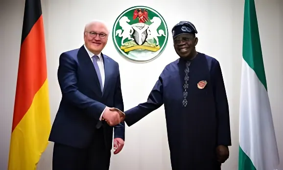

Le 14 mai 2026, l'Allemagne et le Nigeria ont formalisé un accord de développement et d'investissement d'une valeur totale de 365 millions d'euros — soit environ 395 millions de dollars —, couvrant l'énergie, l'agriculture, la formation professionnelle et la transformation numérique. Derrière les chiffres, c'est une vision stratégique qui se dessine : celle d'une Allemagne qui repositionne son engagement en Afrique à l'ère de la compétition géopolitique mondiale.
L'accord signé à Abuja le 14 mai 2026 repose sur une architecture bipartite. Le premier volet consiste en un engagement de 65 millions d'euros en coopération financière et technique immédiate, déployés par le ministère fédéral allemand de la Coopération économique et du Développement (BMZ), la banque publique KfW et la GIZ. Ces fonds ciblent le financement concessionnel des petites entreprises, les énergies renouvelables et les entreprises dirigées par des femmes.
Le second volet, plus ambitieux, porte sur un cadre de garanties de crédit à l'exportation de 300 millions d'euros, proposé par le mécanisme fédéral allemand de garantie Euler Hermes via KfW. Ce dispositif vise à mobiliser l'investissement privé vers des projets de développement stratégiques à long terme, en réduisant le risque pour les entreprises allemandes souhaitant s'implanter ou s'étendre au Nigeria.
La coopération porte sur cinq axes prioritaires convenus entre les deux gouvernements : la transformation agricole et les systèmes alimentaires, le développement économique durable et la formation professionnelle, la transition climatique et énergétique, le renforcement du système de santé, et enfin la promotion de sociétés pacifiques et inclusives.
Dans le domaine de l'énergie, Berlin a exprimé sa volonté de soutenir la réforme du secteur électrique nigérian et les ambitions du pays en matière d'énergies renouvelables. Le Nigeria vise 50 % d'électricité d'origine renouvelable d'ici 2030. Cette coopération fait suite à un précédent engagement de 21 millions d'euros signé en novembre 2025, qui avait posé les bases du dialogue bilatéral sur la transition énergétique.
Signature d'un premier accord énergétique de 21 millions d'euros à Berlin, lors du Groupe de travail sur l'énergie et le climat. Lancement du fonds ETCF (Energy Transition Challenge Fund).
La GIZ et le consulat allemand à Lagos intensifient leur coopération dans l'agroalimentaire, mettant en avant le potentiel de transformation des produits agricoles nigérians pour réduire la facture d'importations (7,65 billions de nairas en 2025).
Signature du grand accord cadre de 365 millions d'euros à Abuja. Présence de la ministre nigériane Doris Uzoka-Anite, de l'ambassadrice allemande Annett Günther et du directeur Afrique du BMZ, Philipp Knill.
Déploiement progressif des fonds, aligné sur le Plan national de développement du Nigeria (2026–2030) et l'objectif gouvernemental d'une économie à 1 000 milliards de dollars d'ici 2030.
L'accord intervient dans un contexte de transformation économique significative au Nigeria. Les réserves de change du pays ont atteint 46 milliards de dollars début 2026, leur plus haut niveau en près de huit ans, tandis que les recettes fiscales sont passées de 19,9 billions de nairas en 2023 à plus de 28 billions de nairas en 2025. Les agences de notation Fitch et S&P ont révisé la perspective du Nigeria à « Stable », signal fort de confiance des marchés internationaux.
Le commerce bilatéral germano-nigérian a progressé de près de 30 % en 2025, atteignant environ 3 milliards d'euros, ce qui place le Nigeria au rang de deuxième partenaire commercial de l'Allemagne en Afrique subsaharienne. Plus de 90 entreprises allemandes sont déjà actives au Nigeria, dont des géants industriels comme Siemens, SAP, Bayer et STIHL.
| Volet de l'accord | Montant | Instrument |
|---|---|---|
| Coopération technique et financière | 65 M€ | BMZ / KfW / GIZ |
| Garanties de crédit à l'exportation | 300 M€ | Euler Hermes / KfW |
| PME et entreprises féminines | Inclus dans 65 M€ | Financement concessionnel |
| Énergie renouvelable (ETCF) | 12 M€ (déjà engagés) | KfW / AECF |
Côté nigérian, le sénateur Abubakar Atiku Bagudu, ministre du Budget et de la Planification économique, a salué l'accord comme un jalon dans la relation bilatérale. La ministre d'État Doris Uzoka-Anite a représenté le gouvernement lors de la cérémonie de signature, insistant sur la coopération dans les secteurs agricoles et climatiques. Côté allemand, Philipp Knill, directeur Afrique du BMZ, a qualifié le Nigeria de « partenaire économique et politique stratégique » de l'Allemagne sur le continent africain.
« Ces discussions ont une nouvelle fois démontré la solidité du partenariat Nigeria–Allemagne, fondé sur le respect mutuel, des priorités partagées et un engagement commun en faveur du développement durable et d'une croissance inclusive. »
— Doris Uzoka-Anite, ministre d'État nigériane au Budget, mai 2026Les officiels allemands ont insisté sur une philosophie de mise en œuvre résumée par la formule « signing today, implementation tomorrow » — signer aujourd'hui, appliquer demain. Cette exigence de traduction concrète des accords en résultats mesurables marque une évolution dans la doctrine de coopération de Berlin, souvent critiquée pour la lenteur de ses décaissements.
Le Nigeria occupe une place centrale dans la stratégie africaine de l'Allemagne. Avec une population de plus de 220 millions d'habitants, un secteur technologique en plein essor et des ressources naturelles abondantes, il est perçu comme le premier marché d'avenir d'Afrique subsaharienne. La coopération en matière de formation professionnelle vise notamment à répondre aux besoins en main-d'œuvre qualifiée dans les secteurs de l'énergie, de la construction et de l'industrie.
Cet accord de 395 millions de dollars dépasse la portée d'un simple protocole de coopération bilatérale. Il traduit la volonté de l'Allemagne de consolider sa présence économique en Afrique par des mécanismes d'investissement concrets et diversifiés — combinant aide publique au développement, garanties publiques et mobilisation du secteur privé. Dans un contexte de désindustrialisation en Europe et de recherche de nouveaux débouchés pour ses exportations, le Nigeria représente pour l'Allemagne un levier à la fois commercial et géopolitique. L'approfondissement de ce partenariat est aussi une réponse à la réorientation des flux d'investissement mondiaux vers l'Afrique, continent dont le poids démographique et économique ne cessera de croître dans les prochaines décennies.
Am 14. Mai 2026 haben Deutschland und Nigeria ein Entwicklungs- und Investitionsabkommen über insgesamt 365 Millionen Euro – rund 395 Millionen Dollar – in den Bereichen Energie, Landwirtschaft, Berufsausbildung und digitale Transformation unterzeichnet. Hinter den Zahlen zeichnet sich eine strategische Vision ab: Deutschland repositioniert sein Engagement in Afrika im Zeitalter des globalen geopolitischen Wettbewerbs.
Das am 14. Mai 2026 in Abuja unterzeichnete Abkommen beruht auf einer zweiteiligen Architektur. Der erste Pfeiler umfasst ein Engagement von 65 Millionen Euro in sofortiger finanzieller und technischer Zusammenarbeit, bereitgestellt durch das Bundesministerium für wirtschaftliche Zusammenarbeit und Entwicklung (BMZ), die KfW-Entwicklungsbank und die GIZ. Diese Mittel richten sich an Kleinunternehmen, erneuerbare Energien und von Frauen geführte Unternehmen.
Der zweite, ehrgeizigere Pfeiler betrifft einen Exportkreditgarantierahmen von 300 Millionen Euro, vorgeschlagen durch Euler Hermes und KfW. Dieses Instrument soll private Investitionen in strategische Langzeitprojekte mobilisieren und das Risiko für deutsche Unternehmen senken, die sich in Nigeria engagieren wollen.
Die Zusammenarbeit konzentriert sich auf fünf Prioritäten: Agrartransformation und Ernährungssysteme, nachhaltige Wirtschaftsentwicklung und Berufsausbildung, Klima- und Energiewende, Stärkung des Gesundheitssystems sowie friedliche und inklusive Gesellschaften.
Im Energiebereich hat Berlin seine Bereitschaft bekundet, Nigerias Stromreform und die ehrgeizigen Ziele des Landes im Bereich erneuerbare Energien zu unterstützen. Nigeria strebt bis 2030 einen Anteil von 50 % erneuerbarer Energien am Strommix an. Diese Zusammenarbeit folgt auf ein früheres Abkommen von 21 Millionen Euro vom November 2025, das den bilateralen Dialog über den Energiewandel begründete.
Unterzeichnung eines ersten Energieabkommens über 21 Millionen Euro in Berlin beim Arbeitskreis Energie und Klima. Einrichtung des ETCF (Energy Transition Challenge Fund).
GIZ und deutsches Generalkonsulat Lagos verstärken Zusammenarbeit im Agrarbereich; Fokus auf Verarbeitungskapazitäten zur Reduzierung des Importrechnungsvolumens Nigerias.
Unterzeichnung des großen Rahmenabkommens über 365 Millionen Euro in Abuja. Anwesend: die nigerianische Ministerin Doris Uzoka-Anite, die deutsche Botschafterin Annett Günther und BMZ-Afrikadirektor Philipp Knill.
Schrittweise Mittelauszahlung im Einklang mit dem nigerianischen Nationalen Entwicklungsplan (2026–2030) und dem Ziel einer Wirtschaftsleistung von 1 Billion Dollar bis 2030.
Das Abkommen fällt in eine Zeit erheblicher wirtschaftlicher Transformation Nigerias. Die Devisenreserven des Landes erreichten Anfang 2026 46 Milliarden Dollar, den höchsten Stand seit fast acht Jahren. Die Steuereinnahmen stiegen von 19,9 Billionen Naira (2023) auf über 28 Billionen Naira (2025). Die Ratingagenturen Fitch und S&P haben den Ausblick Nigerias auf „Stabil" angehoben — ein starkes Signal des Vertrauens der internationalen Märkte.
Der bilaterale Handel stieg 2025 um fast 30 % auf rund 3 Milliarden Euro und macht Nigeria zum zweitgrößten Handelspartner Deutschlands in Subsahara-Afrika. Mehr als 90 deutsche Unternehmen sind bereits in Nigeria aktiv, darunter Industrieschwergewichte wie Siemens, SAP, Bayer und STIHL.
| Vertragsbestandteil | Betrag | Instrument |
|---|---|---|
| Finanzielle und techn. Zusammenarbeit | 65 Mio. € | BMZ / KfW / GIZ |
| Exportkreditgarantien | 300 Mio. € | Euler Hermes / KfW |
| KMU und Frauenunternehmen | In 65 Mio. € enthalten | Konzessionsfinanzierung |
| Erneuerbare Energien (ETCF) | 12 Mio. € (bereits zugesagt) | KfW / AECF |
Auf nigerianischer Seite begrüßte Senator Abubakar Atiku Bagudu, Minister für Haushalt und Wirtschaftsplanung, das Abkommen als Meilenstein. Staatsministerin Doris Uzoka-Anite vertrat die Regierung bei der Unterzeichnung. Auf deutscher Seite bezeichnete BMZ-Afrikadirektor Philipp Knill Nigeria als „strategischen Wirtschafts- und Politikpartner" Deutschlands auf dem afrikanischen Kontinent.
„Diese Verhandlungen haben erneut die Stärke der nigerianisch-deutschen Partnerschaft bewiesen — gegründet auf gegenseitigem Respekt, gemeinsamen Prioritäten und dem gemeinsamen Bekenntnis zu nachhaltiger Entwicklung und inklusivem Wachstum."
— Doris Uzoka-Anite, nigerianische Staatsministerin für Haushalt, Mai 2026Die deutschen Vertreter betonten die Leitlinie „signing today, implementation tomorrow" — heute unterzeichnen, morgen umsetzen. Diese Forderung nach der Übersetzung von Abkommen in messbare Ergebnisse steht für einen Wandel in der deutschen Kooperationsdoktrin, die oft für langsame Mittelabflüsse kritisiert wurde.
Nigeria nimmt in Deutschlands Afrikastrategie eine zentrale Stellung ein. Mit über 220 Millionen Einwohnern, einem wachsenden Technologiesektor und reichhaltigen natürlichen Ressourcen gilt es als der wichtigste Zukunftsmarkt Subsahara-Afrikas. Die Berufsausbildungskomponente soll insbesondere den Fachkräftebedarf in den Bereichen Energie, Bauwesen und Industrie decken.
Dieses Abkommen über 395 Millionen Dollar ist mehr als ein bilaterales Kooperationsprotokoll. Es bringt Deutschlands Willen zum Ausdruck, seine wirtschaftliche Präsenz in Afrika durch konkrete und diversifizierte Investitionsmechanismen zu stärken — durch eine Kombination aus öffentlicher Entwicklungshilfe, staatlichen Garantien und der Mobilisierung privaten Kapitals. Vor dem Hintergrund der europäischen Deindustrialisierung und der Suche nach neuen Absatzmärkten bietet Nigeria Deutschland einen gleichermaßen kommerziellen wie geopolitischen Hebel. Die Vertiefung dieser Partnerschaft ist auch eine Antwort auf die globale Neuausrichtung von Investitionsströmen nach Afrika, einem Kontinent, dessen demografisches und wirtschaftliches Gewicht in den kommenden Jahrzehnten stetig zunehmen wird.